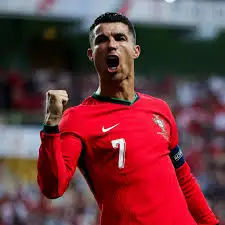

Cristiano Ronaldo dos Santos Aveiro was born on 5 February 1985 in the São Pedro parish of Funchal, the capital of the Portuguese island of Madeira, and grew up in the nearby parish of Santo António.
He is the fourth and youngest child of Maria Dolores dos Santos Viveiros Aveiro, who worked as a cook in the hospitality industry and a cleaning woman,[11][12]
and José Dinis Aveiro, a municipal gardener at the Junta de Freguesia of Santo António and part-time kit man for football club Andorinha.[13][14][15]
His great-grandmother on his father's side, Isabel da Piedade, an African woman, was born in the island of São Vicente, in what was then Portuguese Cape Verde, and moved to Madeira Island at 16.[16][17]
He has one older brother, Hugo, and two older sisters, Elma and Liliana Cátia "Kátia".[2]
He was named after actor and U.S. President Ronald Reagan, whom his father was a fan of.[18]
His mother revealed that she wanted to abort him due to poverty, his father's alcoholism, and having too many children already, but her doctor refused to perform the procedure.[19][20]
Ronaldo grew up in an impoverished Roman Catholic home, sharing a room with all his siblings.[21]
As a child, Ronaldo played for Andorinha from 1992 to 1995,[22]
where his father was the kit man,[13] and later spent two years with Nacional. In 1997, aged 12, he went on a three-day trial with Sporting CP, who signed him for a fee of £1,500.[23]
He subsequently moved from Madeira to Lisbon to join Sporting CP's youth system.[23] By age 14, while struggling with his school duties and responsibilities in Escola EB2 de Telheiras, his school in the Telheiras area of Lisbon, Ronaldo believed he had the ability to play semi-professionally and agreed with his mother and his tutor at Sporting CP, Leonel Pontes,[24] to cease his education to focus entirely on football.[25][26] With a troubled life as a student,[27] and although living in Lisbon area away from his Madeiran family,[28][29] he did not complete schooling beyond the 6th grade.[30][31] While popular with other students at school, he had been expelled after throwing a chair at his teacher, who he said had "disrespected" him.[25] One year later, he was diagnosed with tachycardia, a condition that could have forced him to give up playing football.[32] Ronaldo underwent heart surgery where a laser was used to cauterise multiple cardiac pathways into one, altering his resting heart rate.[33] He was discharged from the hospital hours after the procedure and resumed training a few days later.[34] In 2021, Cristiano Ronaldo's mother, Dolores Aveiro, stated in an interview for Sporting CP's official television channel (Sporting TV) that her son would be a bricklayer if he hadn't become a professional football player.[35]
Growing up, Ronaldo idolised the Brazilian footballers Ronaldinho and Ronaldo Nazário, and has described them as leaving "a beautiful history in football".[36]

On 30 December 2022, Saudi club Al-Nassr reached an agreement for Ronaldo to join the club, signing a contract until 2025.[187] Ronaldo received the highest football salary ever, at €200 million per year,[188][189] including a guaranteed football salary of €90 million, with commercial and sponsorship deals bringing his total annual salary to €200 million. Ronaldo with Al-Nassr in September 2023 He made his debut for Al Nassr on 22 January 2023, as club captain, playing the full 90 minutes of a 1–0 win over Al-Ettifaq,[190] and scored his first goal in a 2–2 draw against Al-Fateh by converting a last-minute penalty.[191] On 9 February, Ronaldo scored all four goals in a 4–0 win over Al Wehda, his first goal of the match being his 500th career league goal.[192] According to the BBC, Ronaldo's transfer to Al-Nassr led a "revolution" in Asian football, with many players from other leagues, particularly those in Europe, transferring to Saudi Pro League clubs for the 2023–24 season.[193][194][195] In the final of the Arab Club Champions Cup on 12 August, Ronaldo scored both goals as they defeated rivals Al-Hilal 2–1 after extra time. Ronaldo scored six goals in the competition.[196] At the close of the year, Ronaldo scored 54 goals in all competitions for Al-Nassr and Portugal, making him the outright top scorer in 2023, reaching the same goalscoring record as in 2016.[197][198] On 27 May 2024, in Al Nassr's home fixture against Al-Ittihad, Ronaldo scored his 34th and 35th league goals of the campaign, surpassing Abderrazak Hamdallah's record for the most goals scored in a single Saudi Pro League season. He also became the first footballer to finish as top scorer in four different leagues, the English, Spanish, Italian and Saudi leagues.[199] On 31 May, in a 5–4 penalty shoot-out defeat to Al-Hilal in the 2024 King Cup final following a 1–1 draw after extra-time (in which he scored his side's second spot kick), he equalled Rogério Ceni's record for most top-level matches by a male professional footballer (1,225).[200]